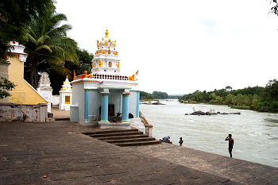

Srirangapatna, nestled on an island in the sacred Kaveri, is a place where devotion meets ancestral remembrance, and where the past and present flow together like the river Kaveri herself.
This historic temple town in Karnataka, best known for the Ranganathaswamy Temple, holds deep significance for Pind Daan and Shraadh rituals. The Garuda Purana, while referencing many northern theerthas, emphasizes that any place where sacred rivers flow and Lord Vishnu resides is auspicious for ancestral rites. Srirangapatna is a profound destination for families seeking peace for their departed.
Why Srirangapatna for Pind Daan?
The sacred geography here is unmistakable. Flowing around the island, River Kaveri is considered among the seven most sacred rivers in the Hindu tradition. Her waters purify, heal, and carry offerings to the realm of the ancestors or Pitru Loka. This site is especially revered during Amavasya (new moon) and Pitru Paksha, when the veil between worlds is said to be thinnest.
In local tradition, the presence of Sri Ranganatha Swamy, a reclining form of Lord Vishnu, is seen as a divine gateway to liberation. Offering Pind Daan here is believed to help the souls of the departed attain Vishnu’s loka, free from the cycles of rebirth.
The Ritual Process
The ritual typically begins at the riverbank ghats, with a guided Tarpana, the offering of water and black sesame seeds while invoking the names of the ancestors. This is followed by the Pinda Pradana, wherein rice balls mixed with ghee and honey are offered, symbolizing the body, sustenance, and sweetness of life.
A purohit (priest) well-versed in Vedic rites and local custom leads the family through each step with care and sacred intent. The final offering is released into the Kaveri, where it is believed the waters carry the essence of our devotion to the Pitru realm.
Sthala Mahatya and Legends
The Sthala Purana of Srirangapatna speaks of this island as the Adi Ranga, the first of the three most sacred shrines of Lord Ranganatha along the Kaveri (preceding Shivanasamudra and Srirangam). It is believed that performing any ritual here carries the blessings of all three.
Local lore also connects the land to the Pandavas, who performed Shraadh here during their exile. The very soil of Srirangapatna is soaked in centuries of prayer, making it a potent ground for connecting with those who have left this mortal plane.
After the Ritual
After the ceremony, families often visit the Sri Ranganathaswamy Temple, a Dravidian architectural marvel, and offer prayers for moksha for their ancestors. Nearby pilgrimage destinations like Melkote and Talakad also offer spiritual continuity for those on a sacred journey.
A Gentle Invitation
The ancient stones of the ghat, the quiet murmur of the Kaveri, and the eternal presence of Lord Vishnu all come together to make this a place where the living and the departed meet in sacred stillness.
Let the ritual be not just an offering, but a remembrance not just a farewell, but a healing.
Ready to perform Pind Daan at Srirangapatna?
We can connect you with experienced local priests, assist with ritual planning, and help you find the most auspicious date and time.
Reach out via Whatsapp to speak with our coordinator
Follow us on Instagram to see the sacred spaces and hear stories from families who’ve journeyed before you